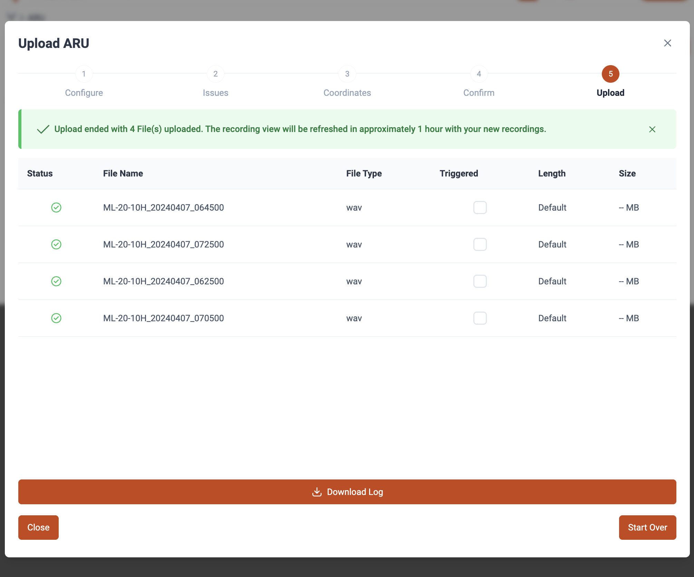
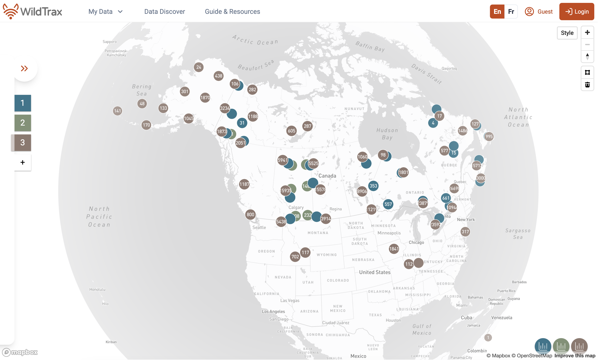
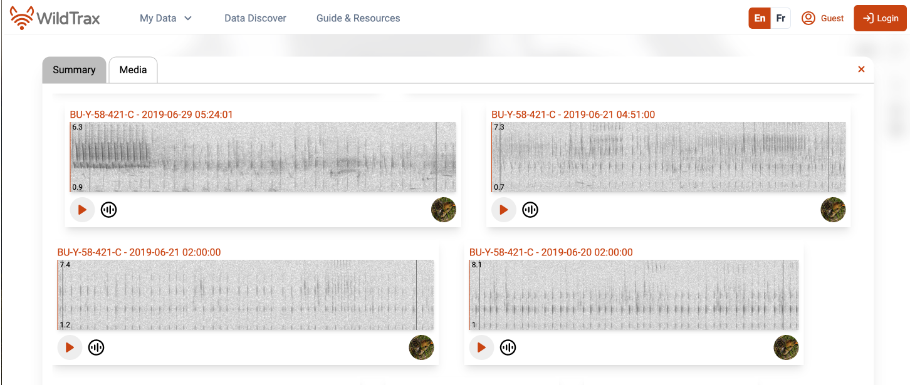

WildTrax: a platform for the management, storage, processing, sharing and discovery of avian data
{kind=link}
Abstract
As environmental sensors become essential tools for monitoring and assessing bird population trends, their effective use relies on robust systems to manage the large, and sometimes overwhelming, datasets they generate. WildTrax (https://www.wildtrax.ca) is a web-based platform designed to manage, store, process, share, and discover environmental sensor data across local to international extents. By creating, developing and mainting this software, WildTrax enables researchers to address ecological questions at multiple spatial and temporal scales through novel analytical approaches, strengthening the avian data network, fostering collaboration, and enhancing data sharing to support bird conservation across Canada and beyond.
Introduction
Birds as ecological indicators
Birds have long been recognized as ecological indicators (Temple and Wiens (1989), Bibby (1999), Canterbury et al. (2000), Gregory et al. (2003), Mekonen (2017)) due to their sensitivity to environmental changes (Furness and Greenwood (2013)), broad distribution across ecosystems (Orme et al. (2006), Jetz et al. (2012), Aide et al. (2013), Lepage, Vaidya, and Guralnick (2014)), and measurable population dynamics (Reif (2013)). They can signal shifts in ecosystem health (Zakaria, Leong, and Yusuf (2005), Newman et al. (2007), Smits and Fernie (2013)) and function (Sekercioglu (2012), Sitters et al. (2016), Morante-Filho and Faria (2017)), providing integral metrics (Stanton et al. (2016), Michel et al. (2020)) for conservation and management. Birds are also valuable indicators because they occupy diverse niches, have well-studied life histories, and often correlate with the health of other taxa (Fleishman et al. (2005)). Their utility spans ecosystem monitoring, habitat quality assessment, and gauging the impact of environmental stressors such as land use change, climate change (Jiguet et al. (2007)), and pollution (Niemi et al. (1997), Mekonen (2017)). Advances in statistical modelling now allow for better integration of uncertainty, phylogenetic relationships, and temporal autocorrelation, enhancing the reliability of bird-based indicators (Fraixedas et al. (2020)). However, there remains challenges in their application as indicators, including spatial, seasonal, and habitat biases, as well as insufficient consideration of statistical uncertainty and temporal autocorrelation in multi-species bird indicators (Gregory et al. (2003), Fraixedas et al. (2020)).
Environmental sensors and big data
Environmental sensors, such as autonomous recording units (ARUs) and remote camera traps, are reshaping avian monitoring by providing continuous, high-resolution, and large-scale data collection (Hobson et al. (2002), Shonfield and Bayne (2017), Pollet et al. (2025)). The adoption of ARUs has allowed single-visit human surveys to be supplemented or replaced with archived acoustic recordings, enabling “big data” approaches that integrate multiple datasets for broader ecological inference (Hampton et al. (2013); Farley et al. (2018); Shin and Choi (2015); Nathan et al. (2022); Peters et al. (2014); Hallgren et al. (2016)) while still being statistical harmonized across methodologies (Sólymos et al. (2013)) with detectability rates depend on factors such as distance from the ARU, frequency range, and habitat structure (Yip et al. (2017)). Remote camera traps have likewise become valuable tools for avian research, particularly for documenting nesting behavior, predation events, and species presence in otherwise inaccessible habitats (Bolton et al. (2007); Randler and Kalb (2018); O’Brien and Kinnaird (2008)). When deployed alongside ARUs, cameras provide complementary visual evidence that strengthens ecological inference, highlighting the advantages of multimodal sensor programs (Buxton et al. (2018); Garland et al. (2020)). Both sensors generate large ecological media datasets, often characterized as ‘big data’ due to their volume, variety (e.g., different file types), veracity (uncertainty in data quality such as noise or misclassification), and velocity (rate of accumulation or acquistion, Hampton et al. (2013); Farley et al. (2018)). Centralized software platforms facilitate standardization, integration, and sharing of these data, enabling interdisciplinary collaboration and advancing biodiversity research, and helping to reduce bias (Peters et al. (2014)). Notably, machine learning is being combined with ecological models to meet computational demands, positioning sensors and big data systems to link raw ecological observations with actionable conservation strategies and sustainability goals (Nathan et al. (2022)) and minimizing data waste (Binley et al. (2023)).
Open avian data
To maximize their utility in an open framework, biodiversity data must align with FAIR principles: findable, accessible, interoperable, and reusable (Kush et al. (2020)). However, challenges persist around data quality, equitable access, and long-term preservation, highlighting the importance of strong and lasting socio-technical frameworks (Shin and Choi (2015)). Software platforms that implement these principles and harmonize diverse datasets while maintaining consistency, equity, and quality can unlock advanced species- and community-level analyses, ultimately transforming raw observations into actionable insights for conservation and policy (Stephenson and Stengel (2020); Fox et al. (2017)). By overcoming limitations of traditional methods and promoting open data-sharing, such platforms enhance understanding of ecological trends (Buxton et al. (2021)) and foster collaboration among stakeholders, aligning priorities across regional to global scales (Kartez and Casto (2008)). Here we introduce WildTrax, a platform for storing, managing, processing, sharing, and discovering avian environmental sensor data. This paper describes version 2.0 of WildTrax, corresponding with its 2025 release.
Methods
Database
Infrastructure
WildTrax uses PostgreSQL, a free and open-source relational database management system (RDBMS). PostgreSQL is well-suited for managing complex biodiversity datasets and rich metadata that accompanies ARU and remote camera data, offering optimized querying, relational structure, and robust storage capabilities (Douglas and Douglas (2003); Zhang, Gertz, and Gruenwald (2009); Kim et al. (2021)). The application infrastructure runs on a virtualized server environment configured for dedicated applications. This architecture supports both daily user interactions and more computationally intensive batch tasks, such as uploading large volumes of audio and image files or running artificial intelligence models for species recognition. To ensure reliability and performance at scale, the system employs load balancing and redundancy measures, enabling near-continuous availability for a large and growing user base. The production server is hosted at the University of Alberta (Edmonton, Canada), with optional long-term storage services available both at the University of Alberta server or through Amazon Web Services (AWS) with nodes available in Montreal and Oregon. Archival off-site storage uses AWS Deep Glacier providing a recommended 3-2-1 data backup policy (Perkel (2019)). To optimize performance, a local M.2 drive paired with a CPU significantly reduces I/O bottlenecks, enabling data read / write speeds multiple times faster than traditional SSD NAS configurations. In practice, these enhancements improve query response times and batch processing speeds, while the upgraded CPU delivers smoother responsiveness and improved multitasking during high-demand operations. Media files are meticulously indexed and linked to the stored media depending on the storage location an Organization chooses.
Schemas
WildTrax employs a hierarchically structure to maintain data integrity, enforce standardization, and support interoperability of environmental sensors. The system implements three primary data schemas, ARUs, cameras, and point counts, organized into Projects, which act as centralized containers for all observations and sensor outputs associated with a specific study or research question. Organizations sit above Projects in the hierarchy, aggregating multiple Projects and unifying sensor data and media under a consistent framework.
{kind=link}
{kind=link}
Within this structure, all media are explicitly linked to their parent Location, the precise geographic point of deployment, ensuring that sensors and their outputs are inseparable from their environmental context. The schema enforces referential integrity while also streamlining front-end operations such as data retrieval, filtering, and visualization using optimized queries. Beyond internal consistency, it supports interoperability with external repositories like Weatherstack for historical meteorological records, as well as the integration of machine-learning–based acoustic classifiers such as BirdNET (Kahl et al. (2021)) and HawkEars (Huus et al. (2025)). By aligning temporal metadata (YYYY-MM-DD HH:MM:SS) with spatial coordinates (longitude, latitude, WGS84), the framework enables multi-dimensional analyses that connect raw sensor output with ecological, climatic, and biogeographic patterns.
Front-end
User interface (UI), user experience (UX) and content management system (CMS)
WildTrax’s user interface is a responsive web application built with Vuejs, leveraging its modular component-based architecture, including the Composition API, for scalability, maintainability, and efficient logic reuse. The user interface (UI) is styled and enhanced using PrimeVue, among other libraries, which delivers rich, customizable components such as data tables and dashboards for seamless data exploration and visualization. The application is deployed via an Apache HTTP Server, which serves the front-end and handles API routing through reverse-proxy configurations to back-end services. WildTrax exposes APIs for data exchange and provides export tools in standard scientific formats (e.g., CSV, JSON, text and zip), supporting downstream integration with statistical and geospatial workflows.
Dashboards are designed to give users a clear, intuitive overview of their sensors’ data, enabling both novice and expert users to navigate and interpret project information with minimal friction. Key features, including filters, sorting, clearly labeled column headers with hover information, and tooltips, are complemented by dropdown menus accessed through responsive, context-aware controls, allowing users to refine or manipulate large datasets quickly without navigating complex database relationship structures.

Visual elements such as sortable data tables, progress indicators, and status icons support efficient user scanning and pattern recognition, while maintaining consistency with the broader WildTrax design system. Attention to micro-interactions, such as inline feedback and notifications when data are updated or filters applied, reinforces a sense of responsiveness and reduces cognitive user load. The dashboard prioritizes transparency by linking each dataset directly back to its associated location and media, ensuring users can trace results from summary views down to the raw sensor files from Tasks to Organizations.
{kind=link}
WildTrax 2.0 incorporates a more content management system (CMS) that provides support for translation (currently supported in English and French), internationalization (i18n), and content localization, ensuring that the platform can accommodate multilingual users and diverse regional requirements.
{kind=link}
Data management and processing
Acoustic sensor
Uploaded recordings supported are WAC and W4V (Wildlife Acoustics proprietary lossless compressed file types), FLAC (open-source lossless compressed file types, https://github.com/xiph/flac), MP3 (lossy compressed audio; (MPEG-1 Audio Layer III)) and WAV (uncompressed audio). Media files, except mp3, are converted to lossless audio codec, FLAC, that preserves bit-for-bit fidelity while reducing storage needs by approximately 50–70% compared to WAV. FLAC also allows researchers to uncompress the lossless data for use in other applications, avoided any issues that arise with lossy data compression (MacPhail et al. (2024)). Once audio recordings are archived, they are then converted into spectrograms using short-time Fourier transforms (STFT) using the SoX. Default project parameters (X-scale for duration of time and Y-scale for spectrogram height in pixels) define the size of the spectrogram but that can changed to modify the dimensions and range of the spectral signatures in order to isolate frequency ranges. These spectrograms then serve as inputs for algorithms for the tags.

WildTrax provides an integrated interface for developing, testing, and applying automated species identification models based on machine learning algorithms, including Hidden Markov Models (HMMs) and other classifiers.
The interface comprises four primary components:
Visualizer – Allows users to view, listen to, and annotate acoustic and image data. It supports multiple data formats and devices, with tools for zooming, filtering, and navigating recordings.
Species Validation – Enables users to label species presence or absence in recordings, creating validation datasets to assess model accuracy. This module also allows review and correction of ROIs generated automatically.
Camera sensor
Camera users can therefore upload, process their image sets with AI, tag the remaining detail, conduct species verification
Avian point counts
The point count sensor serves as a repository for the Boreal Avian Modelling Centre’s point count data. Point counts are harmonized to a specific distance bands which methods are correspondent to ARU methods for synthesis. When exported ARU data can be setup in a point count format example ARU -> 0-INF distance band with the ability to format correctable offsets using wt_qpad_offsets() in the wildrtrax package following methods by Sólymos et al. (2013).
Data publication, sharing and discovery
When the project is completed and all Tasks processed, the status of the project can be changed to a published status. Project publication allows other WildTrax users, who are not project members, to access the media, metadata or species detections from the project either through the project context menus > Download Report or Data Discover. The publication status will control how data will become visible across the system. Project publication will lock users from editing species detections and is considered the final version of the data.
Data Discover is the central hub for exploring environmental sensor data in WildTrax. In Data Discover, users and the public can search for data from ARUs, cameras, and point counts, using a variety of attribute filters, and create summary statistics within a dynamic mapping interface. Users can gain a comprehensive understanding of environmental sensor data in an area that interests them noting which organizations have published data on WildTrax, which species were detected and to what frequency, and explore media elements such as images and sounds captured in the environment.



Results
Growth and community
The sheer growth of media added to the overtime seen in Figure shows how WildTrax and the media therein an exponential curve in the data.
Discussion
Additional Information and Declarations
Competing Interests
The authors declare no competing interests.
Acknowledgements
This project was supported by funding from Environment and Climate Change Canada, Alberta Environment and Parks, the Oil Sands Monitoring Program, and Canada’s Oil Sands Innovation Alliance. We also extend our gratitude to the following organizations for their partnership and support: U of A Sound Studies Institute, Joint Canada-Alberta Implementation Plan for Oil Sands Monitoring, InnoTech Alberta, University of Alberta, NSERC (Natural Sciences and Engineering Research Council of Canada), PTAC, Devon Energy, ConocoPhillips, Cenovus Energy, Nexen, Imperial Oil, Shell, Suncor Energy, Alberta Pacific Forest Industries Inc., Canadian Natural, Alberta Conservation Association, Parks Canada, University of Alberta, Government of Saskatchewan, and Ɂehdzo Got’ı̨nę Gots’ę́ Nákedı Sahtú Renewable Resources Board. We thank the community of users who continue to make WildTrax a strong guiding force in avian conservation.